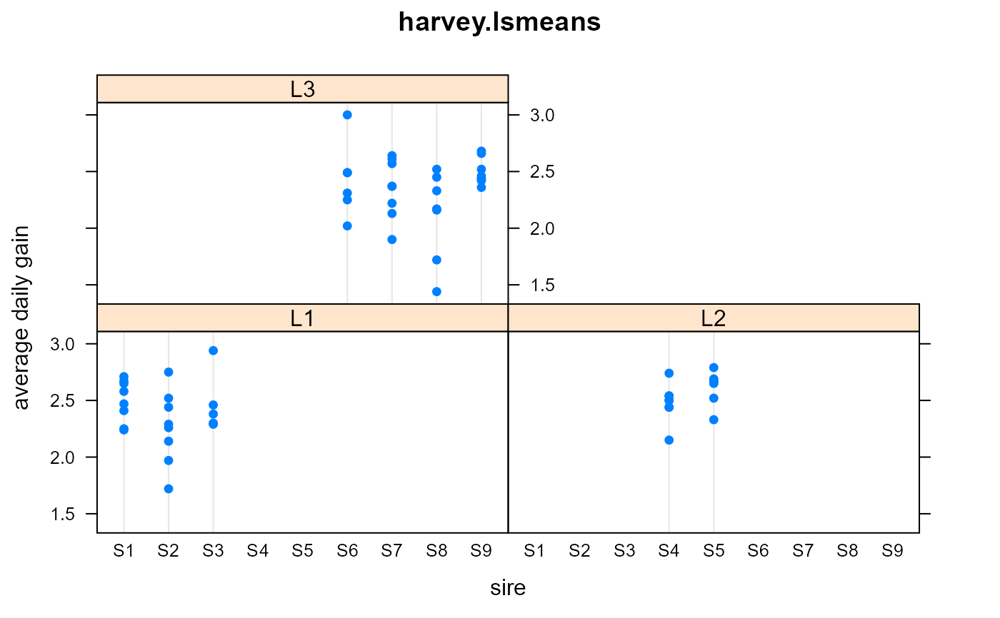

harvey.lsmeans.RdAverage daily gain of 65 steers for 3 lines, 9 sires.
data("harvey.lsmeans")
A data frame with 65 observations on the following 7 variables.
lineline of the dam
siresire
damageage class of the dam
calfcalf number
weanagecalf age at weaning
weightcalf weight at start of feeding
adgaverage daily gain
The average daily gain 'adg' for each of 65 Hereford steers.
The calf age at weaning and initial weight at the beginning of the test feeding is also given.
The steers were fed for the same length of time in the feed lot.
It is assumed that each calf has a unique dam and there are no twins or repeat matings.
Harvey (1960) is one of the earliest papers presenting least squares means (lsmeans).
Harvey, Walter R. (1960). Least-squares Analysis of Data with Unequal Subclass Numbers. Technical Report ARS No 20-8. USDA, Agricultural Research Service. Page 101-102.
Reprinted as ARS H-4, 1975. https://archive.org/details/leastsquaresanal04harv
Also appears in the 'dmm' package as 'harv101.df' See that package vignette for a complete analysis of the data.
# \dontrun{ library(agridat) data(harvey.lsmeans) dat = harvey.lsmeans libs(lattice) dotplot(adg ~ sire|line,dat, main="harvey.lsmeans", xlab="sire", ylab="average daily gain")# Model suggested by Harvey on page 103 m0 <- lm(adg ~ 1 + line + sire + damage + line:damage + weanage + weight, data=dat) # Due to contrast settings, it can be hard to compare model coefficients to Harvey, # but note the slopes of the continuous covariates match Harvey p. 107, where his # b is weanage, d is weight # coef(m0) # weanage weight # -0.008154879 0.001970446 # A quick attempt to reproduce table 4 of Harvey, p. 109. Not right. # libs(emmeans) # emmeans(m0,c('line','sire','damage')) # }